Set up the logic of working with an app by binding it with a business process. For example, the Contracts app can be bound to the Approval business process. The process would include all the stages of document approval, approvers, deadlines, as well as the steps for the users to take in case the contract is not approved.
Business processes are configured in the BRIX business process designer. The image below demonstrates the basic layout of the designer:
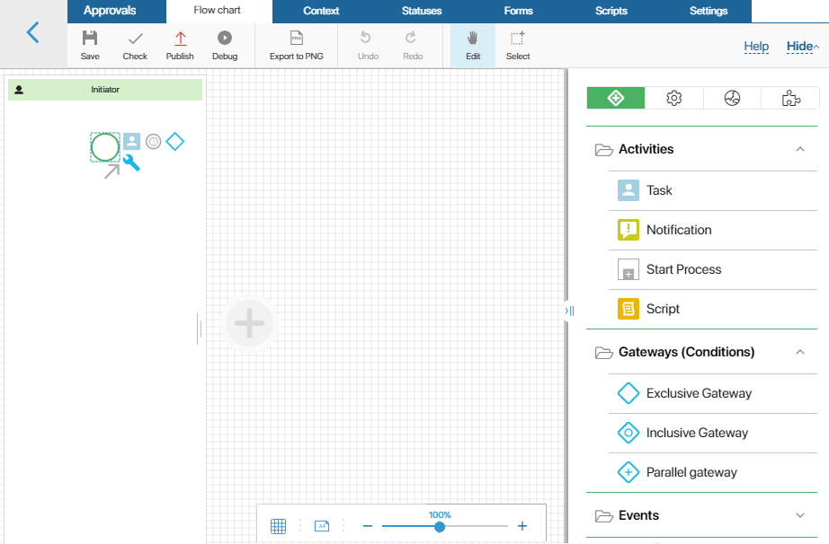
The modeling canvas is located in the center, on the right side you can see a panel with all the workflow activities.
Create a new process for an app
Let’s add a business process for the Contracts app. Read about setting it up in the Create an app article.
Click the gear icon next to the app’s name and select Business Processes in the menu. A page with associated business processes opens.
To add a new business process, click the +Process button.
Fill out the fields in the pop-up window:
- Name*. Enter the name which will be displayed on the business processes page of the app.
- Type*. Select a process with the BPMN elements.
- Parent category. Specify the folder that will store the business process. To create a new folder, open the list of business processes and click +Folder.
After the fields are filled out, click the Create button. The process designer page opens. Here you can set up a business process which will determine the route of a contract’s approval.
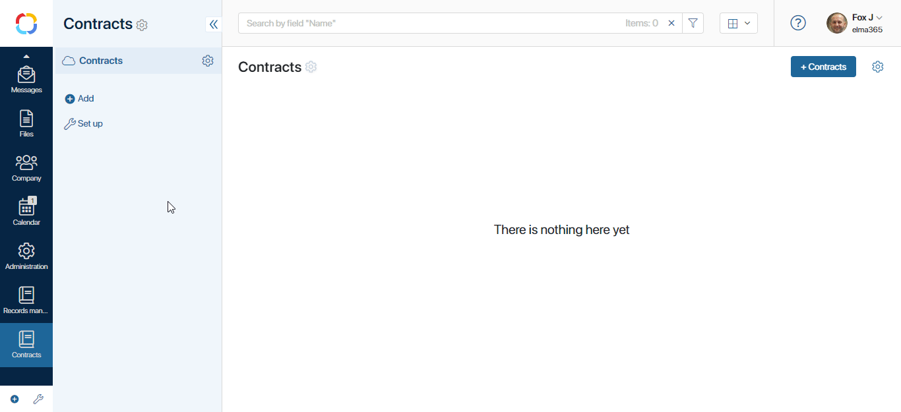
Set up the process diagram
As an example, let’s create the following process: the initiator sends a contract for approval, and it is reviewed by the Head of Sales and the Legal Officer. If necessary, the contract is then sent for revision. After the contract is approved by both participants, it is registered by the accountant. Then the process ends.
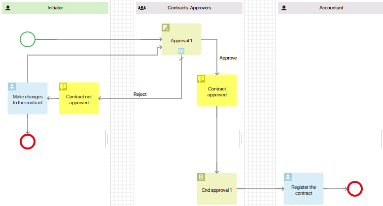
Add participants
Every employee who has any role in the process is represented on the diagram with a swimlane. In the given approval process there are three swimlanes: Initiator, Approvers, and Accountant. As we have several approvers, the Head of the Sales and the Legal Officer, add them to one user group for convenience. To do this, go to Administration > Groups and click the +Group button.
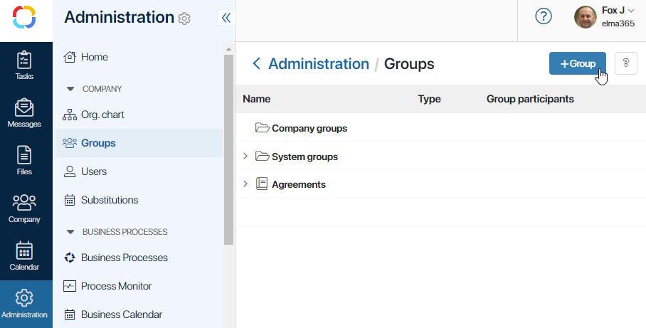
Name the group Contracts. Approvers and save the settings. We are going to need this group for swimlane configuration later.
The Initiator swimlane is added to the diagram by default. As any employee can initiate a process, this swimlane does not have a specific executor. Such swimlanes are called dynamic.
Add a swimlane for approvers. Use a static swimlane since the executors are known beforehand. In the Select group field, select the group of approvers created earlier.
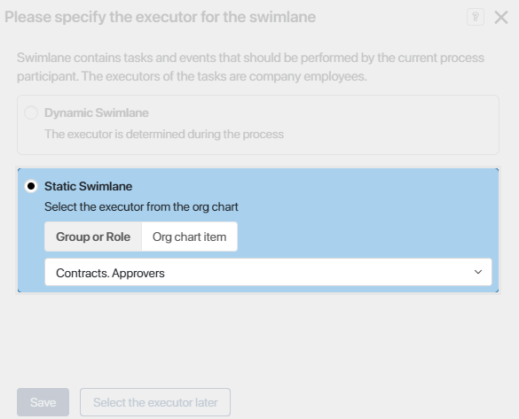
Add the third swimlane for the accountant who is going to register the approved contract. Make it static as well.
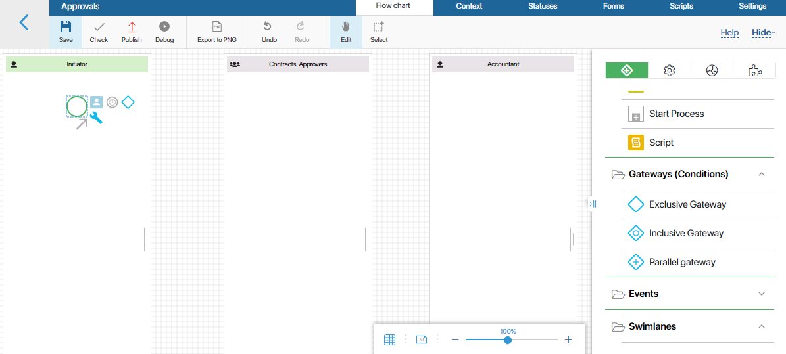
Add activities
Now, you have to place the activities into the swimlanes and connect them. Adding an activity to the diagram is simple. Just drag it from the right side panel and drop in the intended swimlane. Then, connect the activities using connectors to set the route of the process.
You are going to need the following activities: Task, Notification, Approval, and End approval. Also, any process always has a Start event and an End event activity.
Start Event
The diagram of any process begins with a start event. When an employee adds a new contract to the system and clicks the Send for approval button on its page, a start form appears. On this form, one can enter comments, specify approval deadlines, and so on.
To configure the form, double-click on the start event in the diagram. In the settings window, open the Form tab. On the left, in the Context column, the process variables are listed, including the Contract field which stores the document itself. Add the fields that users need to fill out when sending the contract for approval to the Name on form column.
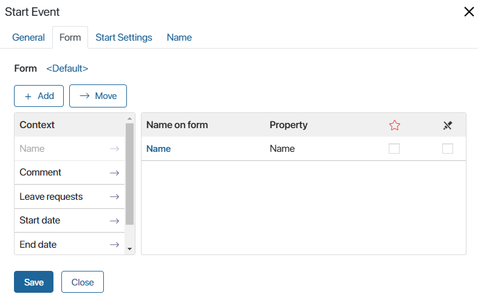
If you lack a variable in the context, create it by clicking the +Add button. Specify the name and data type of the new variable. For example, for the Approve until field, select the Date/time data type.
For more information on configuring the start event form, read the Events article.
Approval activity
Place the Approval activity in the approvers swimlane. Double-click to configure.
In the General tab, in the drop-down menu, select the document you’re sending for approval. In this example it is the Contract.
Select Approval type. Suppose we want all approvers to work with the contract at the same time. After every one of them makes a decision, the contract continues down the route. To do this, select the Parallel approval type.
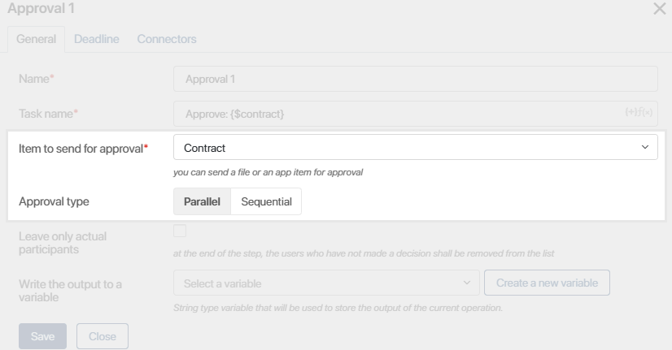
If needed, set a deadline for the task on the Deadline tab.
Open the Connectors tab and check the Reject box as a default connector. Now, the process follows this route if the conditions of the Approve connector are not met. For example, one of the approvers comes to a negative decision. Note that the name of the connector is the same as the name of the following activity by default. You can change the names on the Connectors tab.
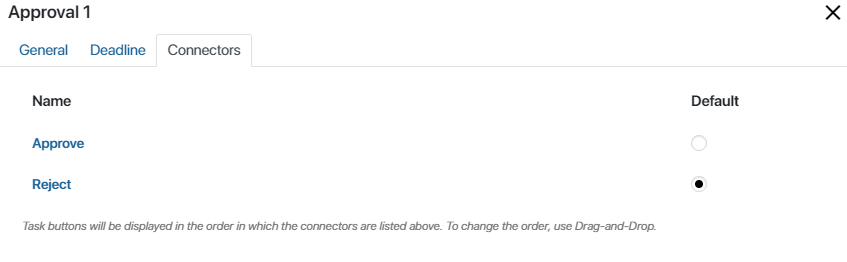
Approve connector
Now, configure the Approve connector. Here you need to determine the conditions for the contract to be considered as approved. The process involves several approvers, some of them may approve the contract and some of them may not. Double-click on the connector on the modeling field, go to the Conditions tab and set the approval percentage to 100. This means that the contract is considered approved only when all the approvers make a positive decision. After that, the process continues.
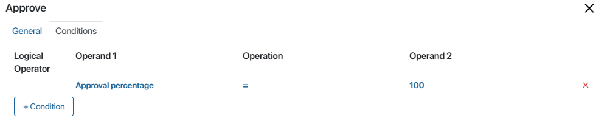
Notifications
After the approvers make a decision, the initiator has to be notified whether the contract has been approved or not. To do this, add two notification activities to the diagram. Connect one of them with the Approve connector, and the other with the Reject connector.
In the settings of every notification enter a name and a message text. Also, select the recipient on the Recipients tab.
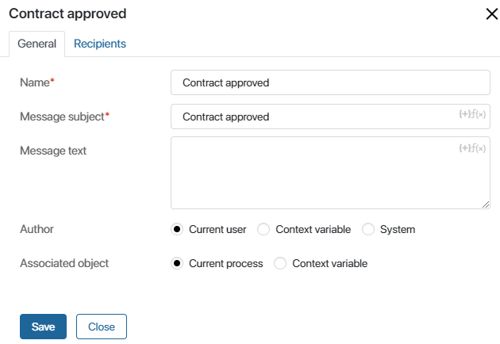
To do this, click Add and select the Initiator context variable.
End Approval
End approval is always used with the Approval activity. It allows you to see the final decision on the document right away without having to wait for the process to be completed. Place it near the contract approval notification. Open the settings, select the Contract variable as an approval object and then select the Approved decision.
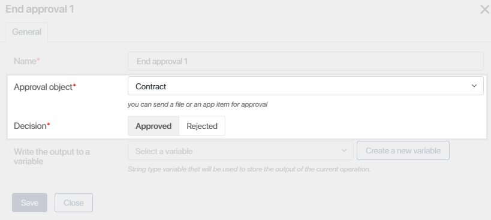
Now, when the contract reaches this stage of the workflow, the decision appears on the contract page while the process flow continues.
Make changes and Register the contract tasks
Apart from the approval task itself, the process can include additional tasks.
If the approvers have rejected the contract, it needs to be returned to the initiator to make changes. To do this, add the Make changes to the contract task to the initiator’s swimlane. This allows the initiator to make changes and be able to resend the document for approval. Make this option available by adding a connector between the Make changes and the Approval tasks.
The approved contract goes to the accountant for registration. Add the task to the diagram, name it and set a deadline. Remember to add the Contract variable to the task form.
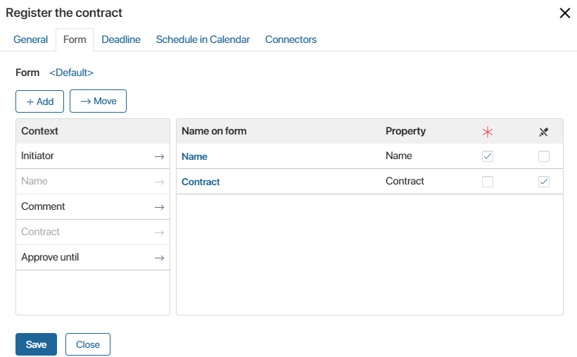
Now, the accountant can access the document page and register it straight from the task.
End Event
Finally, add an End event at the end of the route:
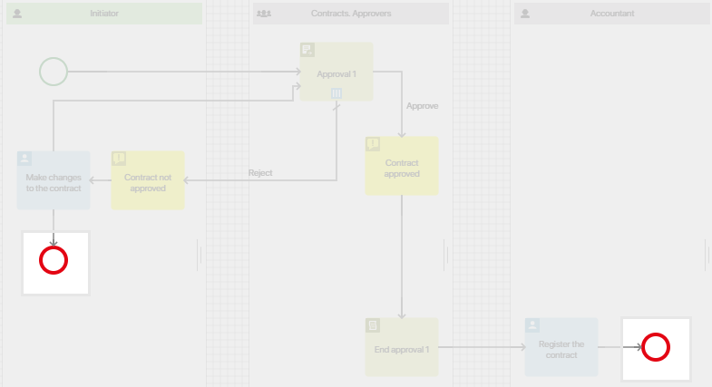
- After the Register the contract task when the contract has finished the route.
- After the Make changes task, in case it is impossible to make necessary changes.
Save, check, and published the process using the top menu buttons. After this, the process will be available for the users.
Associate the route with a document type
When the route is configured and published, you need to associate it with the Contracts app and a Process launch button to the contract form.
Go to the Contracts app and open any contract item. In the bottom left corner of the form, click on the gear icon near the Edit button. Click the + icon. In the pop-up menu, select Add the "Process start" button. Configure the button:
- Add a title to the button: Send for approval. Choose its color.
- Select whether to always show the button, or only if editing or deleting is allowed.
- Select the Approval process created in the previous steps.
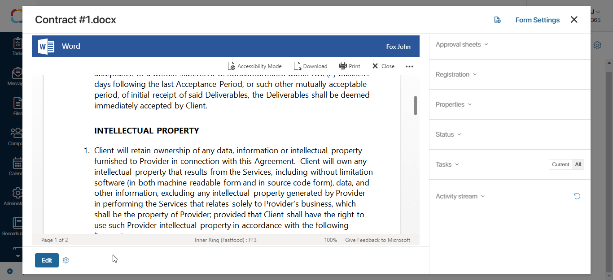
Now the contract form contains the Send for approval button. When an employee clicks on it, the process starts. The system sends the contract to the approvers and assigns the corresponding tasks. Then, the contract goes to registration. You can find the fields for registration on the side panel of the document. The accountant has to add an office, a folder and enter the registration number for the contract.
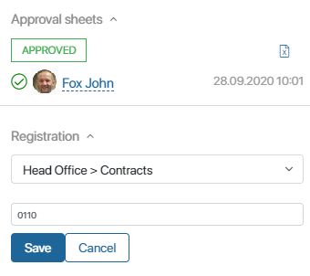
Note that the registration is only available for the apps of the Document type. To register documents in the system, set up Document categorization and enable registration. To learn more see Document categorization and registration settings.
Found a typo? Select it and press Ctrl+Enter to send us feedback